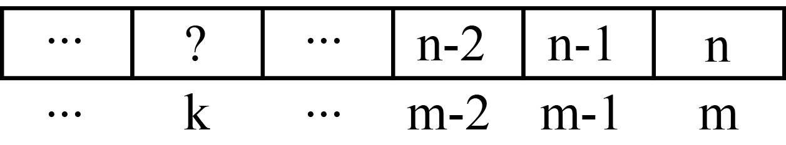

Descrierea soluţiei Deoarece ordinea elementelor în submulţime nu contează, pentru a nu obţine de mai multe ori aceeaşi soluţie, impunem ca elementele submulţimii să fie generate în ordine crescătoare.  Observăm că atunci când poziţia scade cu 1, valoarea maximă scade cu 1, deci diferenţa dintre orice indice k şi maxim ce poate fi ales pe poziţia k este constantă: maxim-k=n-m Deducem că valoarea maximă care poate fi plasată pe poziţia k este n-m+k.